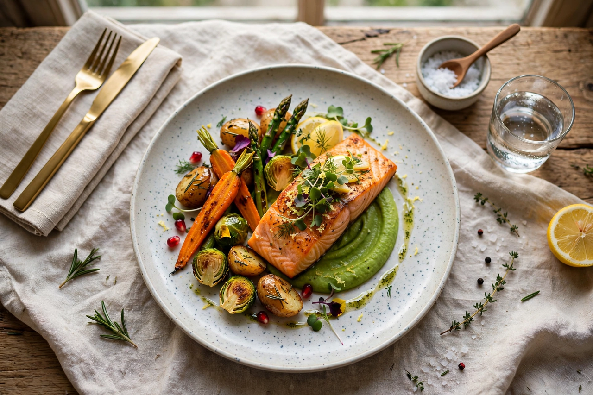

Category: Food and drink
This Commons category gathers media about food and drink: dishes by cuisine and country, ingredients, fruit and vegetables, bread, cheese, desserts, beverages from coffee and tea to wine and beer, cooking, restaurants and food photography.

[Image: A styled food photograph — a plated main course with vegetables]
Subcategories
Food by country, Meals, Dishes, Ingredients, Drinks, and Cooking are heavily populated, many with Featured Images of dishes.